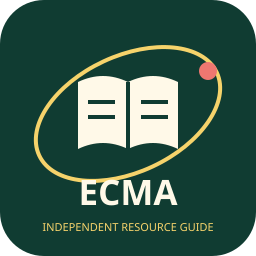

ECMA è l’autorità del mercato dei capitali. Ethiopian Securities Exchange (ESX) è la borsa e opera la piattaforma Neway. La National Bank of Ethiopia (NBE) resta distinta, con il ruolo di banca centrale e vigilanza bancaria riportato nella scheda Etiopia del database.
Questa pagina non è pubblicata, certificata o approvata da ECMA o ESX e non è consulenza finanziaria o d’investimento. L’illustrazione è originale, non un emblema ufficiale. App e status regolamentato non garantiscono rendimenti né impediscono perdite. Verificare sempre identità e autorizzazioni attraverso le fonti istituzionali.
La guida non raccoglie credenziali finanziarie e non esegue né inoltra operazioni di trading.
Risorse istituzionali
Consultare ECMA per informazioni regolamentari, annunci, educazione degli investitori e operatori autorizzati. Partire dal sito ufficiale per le informazioni aggiornate; questa guida non sostituisce registri o verifiche dell’autorità.
ECMA · App del regolatore
L’app istituzionale della Ethiopian Capital Market Authority offre accesso a informazioni sul mercato dei capitali, aggiornamenti regolamentari ed educazione degli investitori. Non è l’app di trading della borsa.
La scheda Google Play indicizzata presenta ECMA con sviluppatore Ethiopian Capital Market Authority. Il collegamento effettivo dalla pagina istituzionale allo store non è stato verificato dal vivo: per il download partire dalla fonte ufficiale.
App Store: disponibilità non verificata. Non viene indicato alcun collegamento Apple per ECMA. Data di lancio dell’app ECMA non verificata.
Neway ESX · App della borsa
Neway è la piattaforma di trading operata da Ethiopian Securities Exchange, distinta dall’app ECMA. La disponibilità Apple riguarda Neway ESX, non un’app pubblicata da ECMA.
Le schede store indicizzate presentano Neway per Android (sviluppatore visualizzato: infotechgroup; nome aziendale: Infotech Private Limited) e Neway ESX per iPhone e iPad (sviluppatore visualizzato: ESX). I collegamenti effettivi dal sito ESX agli store restano da verificare dal vivo; nome del venditore legale Apple e requisiti di sistema non verificati.
La scheda riunisce informazioni sull’app ECMA per Android e su Neway ESX per Android, iPhone e iPad; non attribuisce a ECMA l’app Apple di ESX né un primato di unicità nel database.
Fonti e verifica
Consultazione delle fonti primarie indicizzate: . Verifica live non completata: il recupero diretto delle pagine è bloccato dalla rete nell’ambiente di verifica. Per questo non pubblichiamo link diretti agli store. Disponibilità, attribuzione e compatibilità vanno riconfermate dalle pagine istituzionali prima di installare.
- ECMA: presentazione istituzionale dell’app, riferimento primario per informazioni e download Android.
- ESX: comunicato ufficiale di presentazione Neway. Nessuna data di lancio viene estesa all’app ECMA.
- ESX: notizie e risorse ufficiali.